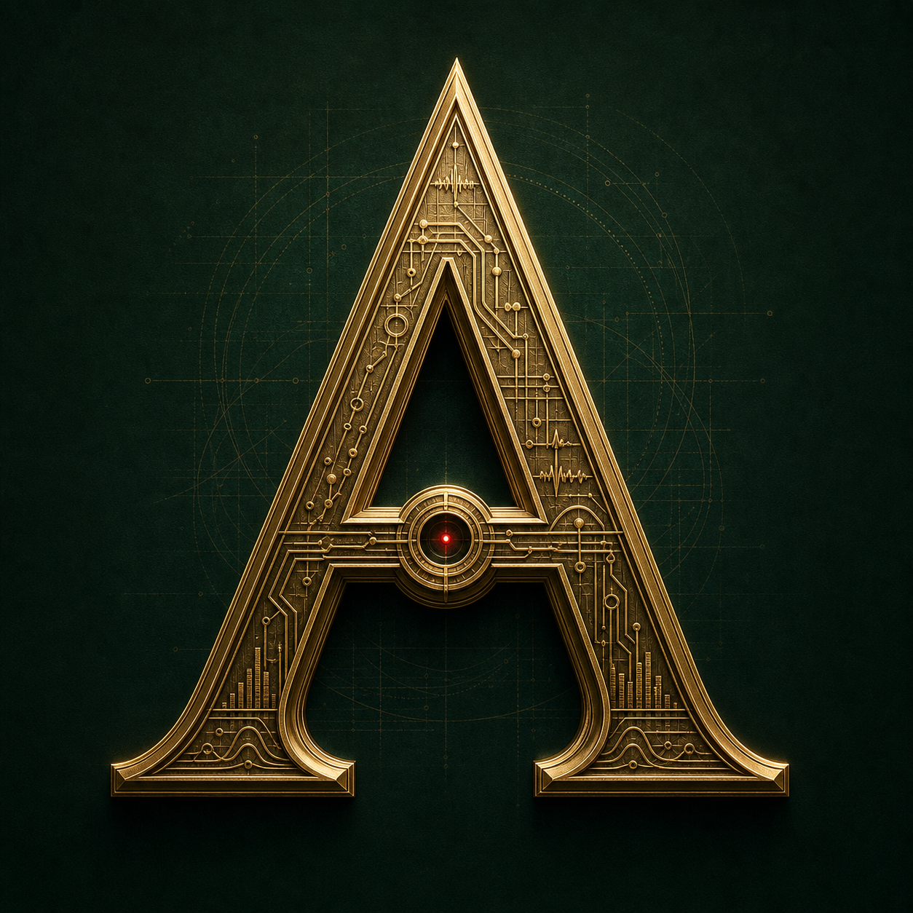

AUREUM STUDY HALL · CTS PRACTICE
Build the judgment behind the signal.
300 original, source-grounded questions. Free. Private by design.
20 / 60 / 115 / 300NO ACCOUNTOFFLINE-READY

300 original, source-grounded questions. Free. Private by design.